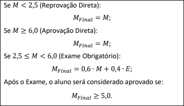

Métodos de Avaliação
-
A disciplina contará com um Projeto Final (a ser desenvolvido em grupo), dividido em três
entregas
parciais ao longo do semestre, e uma série de exercícios práticos de fixação (a serem
desenvolvidos
individualmente). Tais atividades serão utilizadas para avaliar a aprendizagem. No caso do
Projeto Final, as
notas individuais de cada aluno serão atribuídas conforme sua contribuição em cada etapa.
Método para Cálculo da Média Parcial

Média Parcial Mínima para Permitir Realização de Exame
Média Parcial Mínima para Aprovação sem Exame
Método para Cálculo da Média Final

-
OBS: Exame NÃO substituirá avaliação em caso de falta abonada (Ver Artigo 72 do Regimento Geral da Graduação)